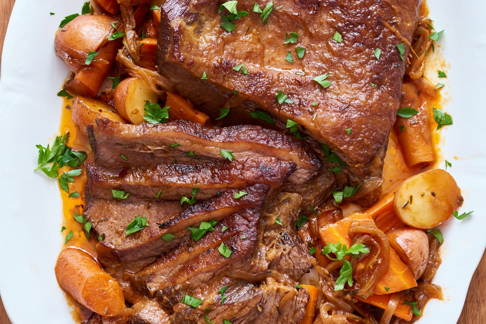

Brisket

Description
Ingredients
- Brisket
- 2 Onions, cut up
- 1 Green Pepper, cut up
- 4 Cloves Garlic, chopped
- Mustard
- Ketchup
- Squished Tomatoes
- 1 tbs Sugar
- 1 Boullion Cube
- 1 packet Frenches Onion Gravy Mix
Steps
- Trim fat off brisket.
- Brown brisket on all sides.
- Spread mustard and ketchup on meat (separately)
- Put all in pot.
- Add squished tomatoes
- Add 1 tbs sugar
- Disolve boullion cube in 1 cup water and add.
- Cover and cook 2-3 hours.
- Check for softness of meat with fork.
- Remove meat.
- Strain juice into bowl.
- Add pack of onion gravy mix (Frenches) and some water.
- Put meat back in veg juices and gravy mix.
- Slice meat.
- Cover and warm in oven (optional)